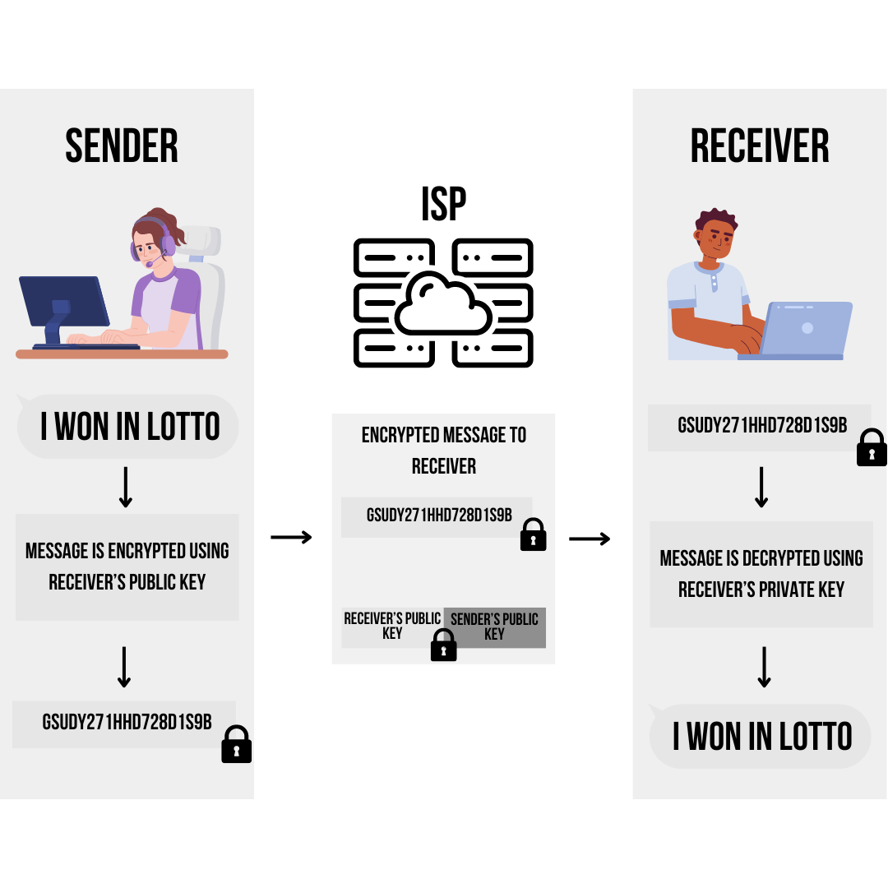

In the age of information, the digital footprints we leave across the internet are meticulously gathered and analyzed by leading companies, all in pursuit of targeting and monetizing user behaviors. For this reason, data sharing comes with inherent risks. Every click, every message, every transaction traversing the web faces the threat of interception by hackers or other malicious third party entities. Thus, ensuring our digital privacy is now more important than ever.
End-to-end encryption is a method that can be used to securely exchange data on the internet. In this practice users can encrypt their data at the source, such that only intended recipients possess the keys to decrypt it. But what exactly is end-to-end encryption, and how can you integrate it into your digital arsenal? In this post, we tackle the essence of end-to-end encryption, explaining its complexities and guiding you through its implementation.
Firstly, let us understand what encryption is since this is the basis of end-to-end encryption. Using data encryption is a way to protect your data as it will be encoded in an unreadable form wherein only the user with the corresponding decryption key can decipher and access it. As the encrypted data passes through the Internet Service Provider (ISP), other entities will not be able to access the information as it appears unreadable to them.
By encrypting data or transforming it into an unreadable data, the user is protected from unwanted sharing of information. This method is widely applied to preserve the integrity of data in transferring files, messages, documents, and other forms of communication of a network.
Encryption works in a way such that you put your data into a secret code before sending it off into your ISP. This process involves using an encryption algorithm, which is basically a set of rules for scrambling the data. There are various encryption algorithms available, each offering different levels of security.
Once you've picked the right encryption algorithm, you also need an encryption key, which is like a secret password. Together, the algorithm and key work their magic, transforming your original data into an encrypted form. This encrypted data can then be safely transmitted to your recipient through the network or your chosen communication channel.
Now, here's the beauty of encryption: even if someone intercepts your encrypted data as it travels across the network, they won't be able to make sense of it without the decryption key. It's like trying to read a secret message without knowing the secret code. Only the intended recipient, armed with the decryption key, can unlock the encrypted data and reveal the original information in its readable form.
As mentioned above, there are numerous encryption algorithms or kinds of encryption but in this post, we will only be focusing on the encryption with the use of paired public and private keys (asymmetric public key) as this is the type of encryption used by an end-to-end encryption. As its name suggests, the data is only encrypted at the end points which are the sender and the receiver. Therefore, by using a pair of public and private keys, the data can be transmitted from end-to-end without any interference as outside entities will not be able to read or understand the data.
Refer to the image below for a visualization of how end-to-end encryption works. It starts with the data from the sender. Then, this data is encrypted using the public key of the receiver. After the data is encrypted it can be safely transmitted to the network or ISPs. When the receiver gets the message, it will need to use its private key to decrypt the message. Only after then will the receiver be able to read the message of the sender.
